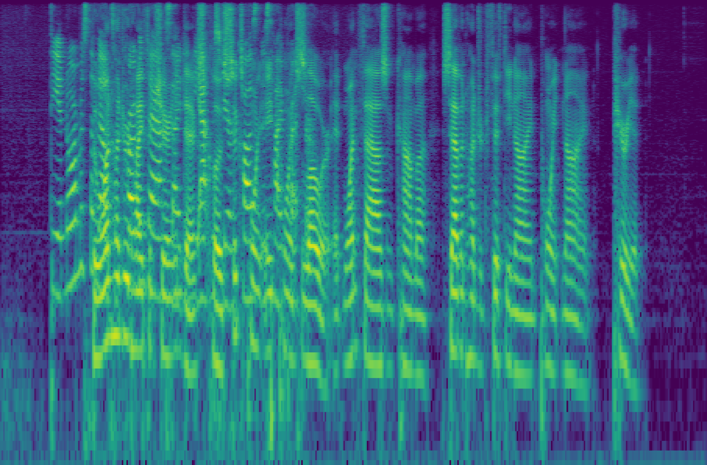
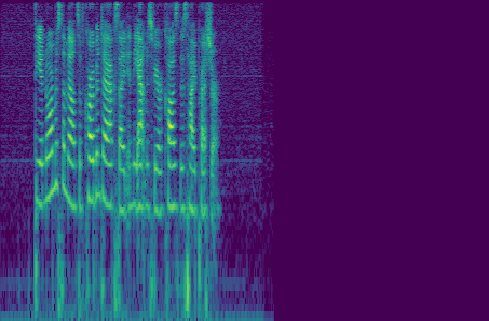

Audio samples (performance on two datasets)
| Sample | Mixture | Target | ReZero | DSS | Ours |
|---|---|---|---|---|---|
| 1 | —— |
—— |
SI-SDR: 14.52dB |
SI-SDR: 12.46dB |
SI-SDR: 16.82dB |
| 2 | —— |
—— |
SI-SDR: 17.30dB |
SI-SDR: 14.32dB |

SI-SDR: 20.51dB |
| 3 | 
—— |

—— |

SI-SDR: 14.25dB |
SI-SDR: 13.84dB |
SI-SDR: 17.08dB |
| 4 | —— |
—— |
SI-SDR: 17.10dB |

SI-SDR: 14.19dB |
SI-SDR: 20.34dB |
| 5 | —— |
—— |
SI-SDR: 19.19dB |
SI-SDR: 17.05dB |
SI-SDR: 22.03dB |